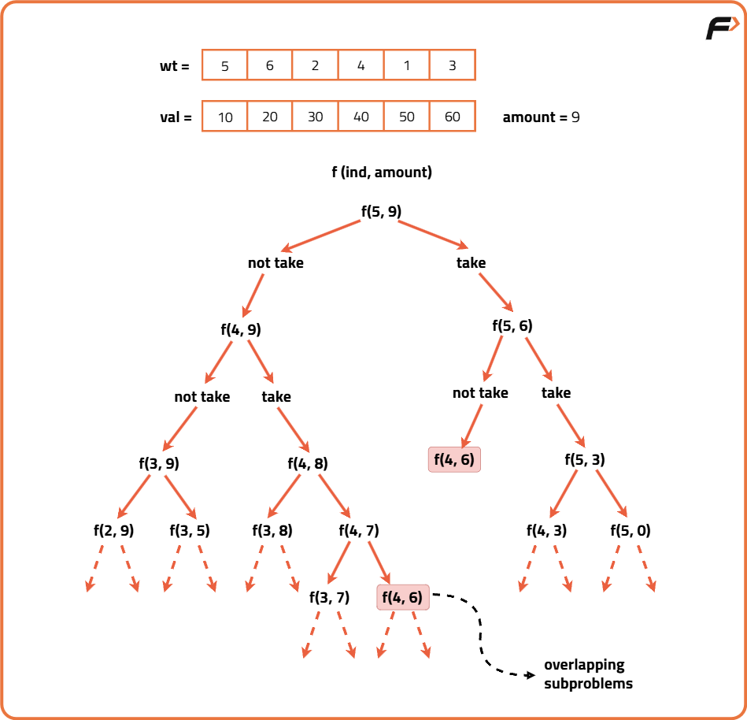
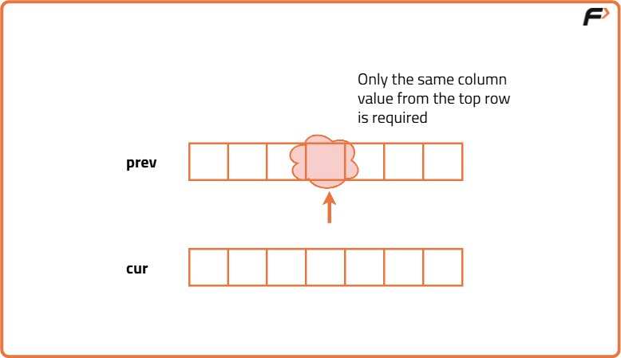

Unbounded Knapsack (DP-23)
Problem Statement: A thief wants to rob a store. He is carrying a bag of capacity W. The store has ‘n’ items of infinite supply. Its weight is given by the ‘wt’ array and its value by the ‘val’ array. He can either include an item in its knapsack or exclude it but can’t partially have it as a fraction. We need to find the maximum value of items that the thief can steal. He can take a single item any number of times he wants and put it in his knapsack .
Examples
Input: n = 3, W = 8, wt = [2, 4, 6], val = [5, 11, 13] Output: 22 Explanation:We can take item with weight 2 (value 5) four times to fill capacity 8,total value = 5 × 4 = 20. But a better choice: take item with weight 2 (value 5) twice and item with weight 4 (value 11) once → total weight = 2 + 2 + 4 = 8, total value = 5 + 5 + 11 = 21. Even better: take two items with weight 4 (value 11 each), total value = 22, which is maximum.
Input: n = 2, W = 3, wt = [2, 1], val = [4, 2] Output: 6 Explanation:We can take item with weight 1 (value 2) three times , total value = 6. Taking weight 2 (value 4) plus weight 1 (value 2) also gives 6. No combination yields more than 6.
Disclaimer: Here is the practice link to help you assess your knowledge better. It's highly recommend trying to solve it before looking at the solution.
Memorization Approach
Algorithm
Why a Greedy Solution doesn’t work?
The first approach that comes to our mind is greedy. A greedy solution will fail in this problem because there is no ‘uniformity’ in data. While selecting a local better choice we may choose an item that will in long term give less value.As the greedy approach doesn’t work, we will try to generate all possible combinations using recursion and select the combination which gives us the maximum value in the given constraints.
Steps to form the recursive solution:
We will first form the recursive solution by the three points mentioned in Dynamic Programming Introduction.
Express the problem in terms of indexes.
We are given ‘n’ items. Their weight is represented by the ‘wt’ array and value by the ‘val’ array. So clearly one parameter will be ‘ind’, i.e index upto which the array items are being considered.
There is one more parameter “W”. We need the capacity of the knapsack to decide whether we can pick an array item or not in the knapsack.
So, we can say that initially, we need to find f(n-1, W) where W is the overall capacity given to us. f(n-1, W) means we are finding the maximum value of items that the thief can steal from items with index 0 to n-1 capacity W of the knapsack. Base Cases:
- If ind==0, it means we are at the first item. Now, in an unbounded knapsack we can pick an item any number of times we want. As there is only one item left, we will pick for W/wt[0] times because we ultimately want to maximize the value of items while respecting the constraint of weight of the knapsack. The value added will be the product of the number of items picked and value of the individual item. Therefore we return (W/wt[0]) * val[0].
We need to generate all the subsequences. We will use the pick/non-pick technique as discussed in this video “Recursion on Subsequences”.
We have two choices:
- Exclude the current element in the subsequence: We first try to find a subsequence without considering the current index item. If we exclude the current item, the capacity of the bag will not be affected and the value added will be 0 for the current item. So we will call the recursive function f(ind-1,W)
- Include the current element in the subsequence: We will try to find a subsequence by considering the current item to the knapsack. As we have included the item, the capacity of the knapsack will be updated to W-wt[ind] and the current item’s value (val[ind]) will also be added to the further recursive call answer.
Now here is the catch, as there is an unlimited supply of coins, we want to again form a solution with the same item value. So we will not recursively call for f(ind-1, W-wt[ind]) rather we will stay at that index only and call for f(ind, W-wt[ind]) to find the answer.
Note: We will consider the current item in the subsequence only when the current element’s weight is less than or equal to the capacity ‘W’ of the knapsack, if it isn’t we will not be considering it.
Return the maximum of take and notTake
As we have to return the maximum amount of value, we will return the max of take and notTake as our answer.
Steps to memoize a recursive solution:
If we draw the recursion tree, we will see that there are overlapping subproblems. In order to convert a recursive solution the following steps will be taken:
- Create a dp array of size [n][W+1]. The size of the input array is ‘N’, so the index will always lie between ‘0’ and ‘n-1’. The capacity can take any value between ‘0’ and ‘W’. Therefore we take the dp array as dp[n][W+1]
- We initialize the dp array to -1.
- Whenever we want to find the answer of particular parameters (say f(ind,target)), we first check whether the answer is already calculated using the dp array(i.e dp[ind][target]!= -1 ). If yes, simply return the value from the dp array.
- If not, then we are finding the answer for the given value for the first time, we will use the recursive relation as usual but before returning from the function, we will set dp[ind][target] to the solution we get.

Code
#include <bits/stdc++.h>
using namespace std;
class Solution {
public:
// Utility function for solving the unbounded knapsack problem using recursion + memoization
int knapsackUtil(vector<int>& wt, vector<int>& val, int ind, int W, vector<vector<int>>& dp) {
// Base case: if we're at the first item
if (ind == 0) {
// Calculate and return the maximum value for the given weight limit
return (W / wt[0]) * val[0];
}
// If the result for this index and weight limit is already calculated, return it
if (dp[ind][W] != -1)
return dp[ind][W];
// Calculate the maximum value without taking the current item
int notTaken = knapsackUtil(wt, val, ind - 1, W, dp);
// Initialize 'taken' with a very small value
int taken = INT_MIN;
// If current item can fit in the remaining capacity
if (wt[ind] <= W)
taken = val[ind] + knapsackUtil(wt, val, ind, W - wt[ind], dp);
// Store and return the maximum of taking or not taking the current item
return dp[ind][W] = max(notTaken, taken);
}
// Main function to call the utility function and set up DP table
int unboundedKnapsack(int n, int W, vector<int>& val, vector<int>& wt) {
// Create a DP table initialized with -1
vector<vector<int>> dp(n, vector<int>(W + 1, -1));
// Call the recursive function and return the answer
return knapsackUtil(wt, val, n - 1, W, dp);
}
};
// Driver code
int main() {
// Initialize item weights
vector<int> wt = {2, 4, 6};
// Initialize item values
vector<int> val = {5, 11, 13};
// Weight capacity of the knapsack
int W = 10;
// Number of items
int n = wt.size();
// Create Solution object
Solution obj;
// Output the result
cout << "The Maximum value of items the thief can steal is "
<< obj.unboundedKnapsack(n, W, val, wt) << endl;
return 0;
}
Complexity Analysis
Time Complexity: O(N*W),There are N*W states therefore at max ‘N*W’ new problems will be solved.
Space Complexity: O(N*W) + O(N),We are using a recursion stack space(O(N)) and a 2D array ( O(N*W)).
Tabulation Approach
Algorithm
First, we need to initialize the base conditions of the recursive solution.
- At ind==0, we are considering the first element, so we will assign its value as (i/wt[0]) * val[0], where i will iterate from 0 to W.
- Next, we are done for the first row, so our ‘ind’ variable will move from 1 to n-1, whereas our ‘cap’ variable will move from 0 to ‘W’. We will set the nested loops to traverse the dp array.
- Inside the nested loops we will apply the recursive logic to find the answer of the cell.
- When the nested loop execution has ended, we will return dp[n-1][W] as our answer.
Code
#include <bits/stdc++.h>
using namespace std;
class Solution {
public:
// Function to solve the unbounded knapsack problem using tabulation
int unboundedKnapsack(int n, int W, vector<int>& val, vector<int>& wt) {
// Create a DP table where dp[i][j] represents max value using first i items and capacity j
vector<vector<int>> dp(n, vector<int>(W + 1, 0));
// Base condition: fill first row considering infinite supply of first item
for (int i = wt[0]; i <= W; i++) {
dp[0][i] = (i / wt[0]) * val[0];
}
// Loop through all items starting from second
for (int ind = 1; ind < n; ind++) {
// Loop through all capacities from 0 to W
for (int cap = 0; cap <= W; cap++) {
// Case 1: Not taking the current item
int notTaken = dp[ind - 1][cap];
// Case 2: Taking the current item (if it fits)
int taken = INT_MIN;
if (wt[ind] <= cap)
taken = val[ind] + dp[ind][cap - wt[ind]];
// Store the best of both choices
dp[ind][cap] = max(notTaken, taken);
}
}
// Return the maximum value possible for n items and capacity W
return dp[n - 1][W];
}
};
// Driver code
int main() {
// Item weights
vector<int> wt = {2, 4, 6};
// Item values
vector<int> val = {5, 11, 13};
// Knapsack capacity
int W = 10;
// Number of items
int n = wt.size();
// Create object
Solution obj;
// Output result
cout << "The Maximum value of items the thief can steal is "
<< obj.unboundedKnapsack(n, W, val, wt) << endl;
return 0;
}
Complexity Analysis
Time Complexity: O(N*W),There are two nested loops
Space Complexity: O(N*W),We are using an external array of size ‘N*W’. Stack Space is eliminated.
Space Optimization Approach
Algorithm
dp[ind][cap] = max(dp[ind-1][cap] ,dp[ind][cap-wt[ind]]
We see that to calculate a value of a cell of the dp array, we need only the previous row values (say prev). So, we don’t need to store an entire array. Hence we can space optimize it.
We will be space optimizing this solution using only one row.
If we clearly see the values required: dp[ind-1][cap] and dp[ind-1][cap - wt[ind]], we can say that if we are at a column cap, we will only require the values shown in the blue box(of the same column) from the previous row and other values will be from the cur row itself. So why do we need to store an entire array for it?

If we need only one value from the prev row, there is no need to store an entire row. We can work a bit smarter.We can use the cur row itself to store the required value in the following way:
- We somehow make sure that the previous value( say preValue) is available to us in some manner ( we will discuss later how we got the value).
- Now, let us say that we want to find the value of cell cur[3], by going through the relation we find that we need a preValue and one value from the cur row.
- We see that to calculate the cur[3] element, we need only a single variable (preValue). The catch is that we can initially place this preValue at the position cur[3] (before finding its updated value) and later while calculating for the current row’s cell cur[3], the value present there automatically serves as the preValue and we can use it to find the required cur[3] value. ( If there is any confusion please see the code).
- After calculating the cur[3] value we store it at the cur[3] position so this cur[3] will automatically serve as preValue for the next row. In this way, we space-optimize the tabulation approach by just using one row.
Code
#include <bits/stdc++.h>
using namespace std;
class Solution {
public:
// Function to solve the unbounded knapsack problem using space-optimized DP
int unboundedKnapsack(int n, int W, vector<int>& val, vector<int>& wt) {
// Create a 1D DP array where cur[cap] stores max value for given capacity
vector<int> cur(W + 1, 0);
// Base condition: fill values for first item
for (int i = wt[0]; i <= W; i++) {
cur[i] = (i / wt[0]) * val[0];
}
// Iterate through remaining items
for (int ind = 1; ind < n; ind++) {
for (int cap = 0; cap <= W; cap++) {
// Option 1: Not take current item
int notTaken = cur[cap];
// Option 2: Take current item (if it fits)
int taken = INT_MIN;
if (wt[ind] <= cap) {
taken = val[ind] + cur[cap - wt[ind]];
}
// Store the better option
cur[cap] = max(notTaken, taken);
}
}
// Return max value for capacity W
return cur[W];
}
};
int main() {
vector<int> wt = {2, 4, 6}; // Weights of items
vector<int> val = {5, 11, 13}; // Values of items
int W = 10; // Capacity of knapsack
int n = wt.size(); // Number of items
Solution obj; // Create Solution object
cout << "The Maximum value of items the thief can steal is "
<< obj.unboundedKnapsack(n, W, val, wt) << endl;
return 0;
}
Complexity Analysis
Time Complexity: O(N*W),There are two nested loops.
Space Complexity: O(W), We are using an external array of size ‘W+1’ to store only one row.